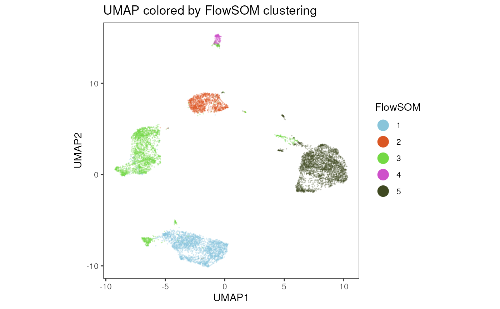

Getting Started
This is a basic cyCONDOR workflow for data analysis,
more detailed description of all cyCONDOR functionalists
and visualization tools can be found in the Articles section.
In this section we will describe how to load data from a folder of fcs
files, how to perform dimensionality reduction and clustering together
with some basic visualization of the results.
We start by loading the cyCONDOR package
Loading the data
With this function you import the .fcs files in R, the
.fcs files should be all stored in a single folder
FCSpath, and the file names should match one column of the
annotation file.
Arguments:
FCSpath= folder where the .fcs
files are stored
ceil= Number of cells to use for each file (set
to a high number if you want to use all available events)
useCSV = flag if the input are
.csv files and not .fcs (experimental)
remove_param = Parameters to remove from the
transformation, “inTime” should be kept
anno_table = path to the annotation table file
“filename_col” = Name of the column containing the filename matching
with the .fcs files
seed= seed to be used for the randomization of
the events
condor <- prep_fcd(FCSpath = "../.test_files/fcs/",
ceil = 1000,
useCSV = FALSE,
transformation = "a",
remove_param = c("FSC-H", "SSC-H", "FSC-W", "SSC-W", "Time", "InFile"),
anno_table = "../.test_files/metadata.csv",
filename_col = "filename",
seed = 91)## [1] "FSC-A w= 0 t= 189614.25"
## [1] "SSC-A w= 0 t= 159321.1875"
## [1] "CD38 w= 1.10110198739295 t= 12272.0419921875"
## [1] "CD8 w= 1.52711662134285 t= 6956.49267578125"
## [1] "CD195 (CCR5) w= 1.4729172443128 t= 9256.8984375"
## [1] "CD94 (KLRD1) w= 1.1757008573567 t= 41627.87890625"
## [1] "CD45RA w= 0.502241293373956 t= 200441.765625"
## [1] "HLA-DR w= 0.995131824637099 t= 33856.6328125"
## [1] "CD56 w= 1.0844643477736 t= 35806.97265625"
## [1] "CD127 (IL7RA) w= 1.37679964552824 t= 12671.8828125"
## [1] "CD14 w= 1.2705293186811 t= 15767.8935546875"
## [1] "CD64 w= 0.942822493858364 t= 339462.875"
## [1] "CD4 w= 0.857314653224896 t= 194516.96875"
## [1] "IgD w= 1.10694870905783 t= 54382.5546875"
## [1] "CD19 w= 1.18758039492952 t= 43935.375"
## [1] "CD16 w= 0.910056426448899 t= 183188.46875"
## [1] "CD32 w= 1.44828802695921 t= 6092.5078125"
## [1] "CD197 (CCR7) w= 1.57848859227314 t= 2589.53173828125"
## [1] "CD20 w= 1.16465534964918 t= 40245"
## [1] "CD27 w= 1.3193182761341 t= 20148.978515625"
## [1] "CD15 w= 1.56304218964616 t= 15318.5224609375"
## [1] "PD-1 w= 1.9717913384639 t= 2481.6201171875"
## [1] "live_dead w= 1.96359215476197 t= 2067.53076171875"
## [1] "CD3 w= 1.2371183320154 t= 35094.96484375"
## [1] "CD57 w= 0.456517766313048 t= 256492.5"
## [1] "CD25 w= 1.08103750635452 t= 14778.49609375"
## [1] "CD123 (IL3RA) w= 1.17168323594488 t= 52138.60546875"
## [1] "CD13 w= 1.08980446579641 t= 100691.4921875"
## [1] "CD11c w= 1.01858653919909 t= 46644.93359375"
class(condor)## [1] "flow_cytometry_dataframe"Dimensionality Reduction
To reduce the complexity of the dataset we perform first dimensionality reduction, we first perform a principal component analysis (PCA) and use those coordinates for non-linear dimensionality reduction with the UMAP or tSNE algorithms. With this approach we can visualize the complexity of the dataset in a two dimensional space.
PCA
Arguments:
fcd = cyCONDOR dataset
data_slot = name of the data slot to use to
calculate the PCA, original data (orig) or harmonized data (norm)
seed = Seed used for the randomization
steps
condor <- runPCA(fcd = condor,
data_slot = "orig",
seed = 91)UMAP
Arguments:
fcd = cyCONDOR dataset
input type = data to use for the calculation of
the UMAP, e.g. “expr” or “pca”
data_slot = name of the PCA data slot to use to
harmonize. If no prefix was added the, orig.
seed = Seed used for the randomization
steps
top_PCA = Select the number of PC to use.
condor <- runUMAP(fcd = condor,
input_type = "pca",
data_slot = "orig",
seed = 91)Visualize the UMAP
plot_marker(data = cbind(condor$umap$pca_orig, condor$anno$cell_anno),
param = "group",
order = T,
title = "UMAP colored by group",
dim_red = "UMAP",
facet_by_variable = FALSE)
tSNE
Arguments:
fcd = cyCONDOR dataset
input type = data to use for the calculation of
the UMAP, e.g. “expr” or “pca”
data_slot = name of the PCA data slot to use to
harmonize. If no prefix was added the, orig.
seed = Seed used for the randomization
steps
perplexity = Perplexity parameter for the
calculation.
condor <- runtSNE(fcd = condor,
input_type = "pca",
data_slot = "orig",
seed = 91,
perplexity = 30)## Read the 10000 x 29 data matrix successfully!
## OpenMP is working. 1 threads.
## Using no_dims = 2, perplexity = 30.000000, and theta = 0.500000
## Computing input similarities...
## Building tree...
## - point 10000 of 10000
## Done in 2.79 seconds (sparsity = 0.013027)!
## Learning embedding...
## Iteration 50: error is 96.832296 (50 iterations in 1.57 seconds)
## Iteration 100: error is 84.589965 (50 iterations in 2.19 seconds)
## Iteration 150: error is 81.308503 (50 iterations in 1.45 seconds)
## Iteration 200: error is 80.502378 (50 iterations in 1.48 seconds)
## Iteration 250: error is 80.156805 (50 iterations in 1.48 seconds)
## Iteration 300: error is 3.166519 (50 iterations in 1.34 seconds)
## Iteration 350: error is 2.840701 (50 iterations in 1.28 seconds)
## Iteration 400: error is 2.653973 (50 iterations in 1.22 seconds)
## Iteration 450: error is 2.531473 (50 iterations in 1.20 seconds)
## Iteration 500: error is 2.444583 (50 iterations in 1.23 seconds)
## Iteration 550: error is 2.378906 (50 iterations in 1.22 seconds)
## Iteration 600: error is 2.328042 (50 iterations in 1.26 seconds)
## Iteration 650: error is 2.287705 (50 iterations in 1.22 seconds)
## Iteration 700: error is 2.255558 (50 iterations in 1.23 seconds)
## Iteration 750: error is 2.229873 (50 iterations in 1.24 seconds)
## Iteration 800: error is 2.210205 (50 iterations in 1.25 seconds)
## Iteration 850: error is 2.197058 (50 iterations in 1.25 seconds)
## Iteration 900: error is 2.188463 (50 iterations in 1.30 seconds)
## Iteration 950: error is 2.181792 (50 iterations in 1.31 seconds)
## Iteration 1000: error is 2.176606 (50 iterations in 1.31 seconds)
## Fitting performed in 27.04 seconds.Visualize the tSNE
plot_marker(data = cbind(condor$tSNE$pca_orig, condor$anno$cell_anno),
param = "group",
order = T,
title = "tSNE colored by group",
dim_red = "tSNE",
facet_by_variable = FALSE)Clustering
We now group cells with similar marker expression with the Phenograph or FlowSOM clustering algorithms.
Phenograph
Arguments:
fcd = cyCONDOR dataset.
input type = data to use for the calculation of
the UMAP, e.g. “pca” (suggested option).
data_slot = name of the PCA data slot to use to
harmonize. If no prefix was added the, orig.
k = K value used for clustering.
seed = Seed used for the randomization
steps.
condor <- runPhenograph(fcd = condor,
input_type = "pca",
data_slot = "orig",
k = 60,
seed = 91)## Run Rphenograph starts:
## -Input data of 10000 rows and 29 columns
## -k is set to 60## Finding nearest neighbors...DONE ~ 4.947 s
## Compute jaccard coefficient between nearest-neighbor sets...## Presorting knn...## presorting DONE ~ 0.395 s
## Start jaccard
## DONE ~ 0.516 s
## Build undirected graph from the weighted links...DONE ~ 0.2 s
## Run louvain clustering on the graph ...DONE ~ 1.023 s## Run Rphenograph DONE, totally takes 6.68599999999999s.## Return a community class
## -Modularity value: 0.8355073
## -Number of clusters: 13Visualize Phenograph results
plot_marker(data = cbind(condor$umap$pca_orig, condor$clustering$Phenograph_pca_orig_k_60),
param = "Phenograph",
order = T,
title = "UMAP colored by Phenograph clustering",
dim_red = "UMAP",
facet_by_variable = FALSE)FlowSOM
Arguments:
fcd = cyCONDOR dataset.
input type = data to use for the calculation of
the UMAP, e.g. “pca” (suggested option).
data_slot = name of the PCA data slot to use to
harmonize. If no prefix was added the, orig.
num_clusters = Number of final clusters.
seed = Seed used for the randomization
steps.
condor <- runFlowSOM(fcd = condor,
input_type = "expr",
data_slot = "orig",
num_clusters = 5,
seed = 91,
prefix = NULL,
ret_model = TRUE)## Building SOM## Mapping data to SOM## Building MSTVisualize FlowSOM results
plot_marker(data = cbind(condor$umap$pca_orig, condor$clustering$FlowSOM_expr_orig_k_5),
param = "FlowSOM",
order = T,
title = "UMAP colored by Flowsom clustering",
dim_red = "UMAP",
facet_by_variable = FALSE)
Data visualization and statistics
We can now visualize the results or the analysi and compare different experimental groups.
Confusion Matrix
Arguments:
variable = Variable to by used to calculate the
confusion.
group = Grouping to calculate the relative
contribution to the variable.
title = Title for the plot.
confusion_HM(variables = condor$clustering$Phenograph_pca_orig_k_60$Phenograph,
group = condor$anno$cell_anno$group, size = 30,
title = "Confusion Matrix - Metaclusters")
Barplot Frequencies
Arguments:
x_axes = Grouping of the x axes.
color = Stratification to use on the stacked
barplot.
title = Title for the plot.
legend_title = Title for the legend.
barplot_frequency(x_axes = condor$anno$cell_anno$group,
colour = condor$clustering$Phenograph_pca_orig_k_60$Phenograph,
title = "Stacked barplot of metaclusters frequencies",
legend_title = "Phenograph Cluster - Metaclusters")
Expression HM
Arguments:
input = cbind of the expression table to be
used the the grouping (eg. clustering).
group = column name to be used for the grouping
(eg. “Phenograph” or “group”)
maxvalue = Max scaled expression to be used for
the color coding.
title = Title for the plot.
HM_markers(input = cbind(condor$expr$orig, condor$clustering$Phenograph_pca_orig_k_60),
group = "Phenograph",
maxvalue = NULL,
title = "Marker expression in metaclusters")
Boxplot and statistics
Arguments:
annotation = Sample annotation to be used for
the plot.
sample_var = Column name containing the sample
IDs.
group_var = Column name defining the grouping
for plotting.
variable = Variable used to stratify the
plotting.
numeric = Logical if the grouping is
numeric.
test.type = Test to be performed. (see need
some development here)
box_stat <- boxplot_and_stats(annotation = condor$anno$cell_anno,
sample_var = "sample_ID",
group_var = "group",
variable = condor$clustering$Phenograph_pca_orig_k_60$Phenograph,
numeric = FALSE,
test.type = "t.test")
box_stat$plot$Cluster_7Session Info
info <- sessionInfo()
info## R version 4.3.1 (2023-06-16)
## Platform: x86_64-pc-linux-gnu (64-bit)
## Running under: Ubuntu 22.04.3 LTS
##
## Matrix products: default
## BLAS: /usr/lib/x86_64-linux-gnu/openblas-pthread/libblas.so.3
## LAPACK: /usr/lib/x86_64-linux-gnu/openblas-pthread/libopenblasp-r0.3.20.so; LAPACK version 3.10.0
##
## locale:
## [1] LC_CTYPE=en_US.UTF-8 LC_NUMERIC=C
## [3] LC_TIME=en_US.UTF-8 LC_COLLATE=en_US.UTF-8
## [5] LC_MONETARY=en_US.UTF-8 LC_MESSAGES=en_US.UTF-8
## [7] LC_PAPER=en_US.UTF-8 LC_NAME=C
## [9] LC_ADDRESS=C LC_TELEPHONE=C
## [11] LC_MEASUREMENT=en_US.UTF-8 LC_IDENTIFICATION=C
##
## time zone: Etc/UTC
## tzcode source: system (glibc)
##
## attached base packages:
## [1] stats graphics grDevices utils datasets methods base
##
## other attached packages:
## [1] cyCONDOR_0.1.5
##
## loaded via a namespace (and not attached):
## [1] fs_1.6.3 destiny_3.14.0
## [3] matrixStats_1.1.0 bitops_1.0-7
## [5] devtools_2.4.5 lubridate_1.9.3
## [7] RColorBrewer_1.1-3 doParallel_1.0.17
## [9] ggsci_3.0.0 Rgraphviz_2.44.0
## [11] profvis_0.3.8 tools_4.3.1
## [13] backports_1.4.1 utf8_1.2.4
## [15] R6_2.5.1 uwot_0.1.16
## [17] urlchecker_1.0.1 withr_2.5.1
## [19] sp_2.1-1 prettyunits_1.2.0
## [21] gridExtra_2.3 cli_3.6.1
## [23] Biobase_2.60.0 textshaping_0.3.7
## [25] ggcyto_1.28.1 labeling_0.4.3
## [27] sass_0.4.7 robustbase_0.99-0
## [29] readr_2.1.4 randomForest_4.7-1.1
## [31] askpass_1.2.0 proxy_0.4-27
## [33] slingshot_2.8.0 pkgdown_2.0.7
## [35] systemfonts_1.0.5 foreign_0.8-85
## [37] colorRamps_2.3.1 harmony_1.1.0
## [39] parallelly_1.36.0 sessioninfo_1.2.2
## [41] readxl_1.4.3 TTR_0.24.3
## [43] flowCore_2.12.2 rstudioapi_0.15.0
## [45] generics_0.1.3 shape_1.4.6
## [47] car_3.1-2 dplyr_1.1.3
## [49] Matrix_1.6-1.1 RProtoBufLib_2.12.1
## [51] ggbeeswarm_0.7.2 fansi_1.0.5
## [53] S4Vectors_0.38.2 abind_1.4-5
## [55] lifecycle_1.0.3 scatterplot3d_0.3-44
## [57] yaml_2.3.7 carData_3.0-5
## [59] SummarizedExperiment_1.30.2 recipes_1.0.8
## [61] Rtsne_0.16 grid_4.3.1
## [63] promises_1.2.1 crayon_1.5.2
## [65] miniUI_0.1.1.1 lattice_0.22-5
## [67] cowplot_1.1.1 pillar_1.9.0
## [69] knitr_1.44 GenomicRanges_1.52.1
## [71] boot_1.3-28.1 future.apply_1.11.0
## [73] codetools_0.2-19 glue_1.6.2
## [75] pcaMethods_1.92.0 data.table_1.14.8
## [77] remotes_2.4.2.1 vcd_1.4-11
## [79] png_0.1-8 vctrs_0.6.4
## [81] cellranger_1.1.0 gtable_0.3.4
## [83] Rphenoannoy_0.1.0 cachem_1.0.8
## [85] gower_1.0.1 xfun_0.40
## [87] princurve_2.1.6 S4Arrays_1.0.6
## [89] mime_0.12 prodlim_2023.08.28
## [91] RcppEigen_0.3.3.9.4 ConsensusClusterPlus_1.64.0
## [93] survival_3.5-7 timeDate_4022.108
## [95] pheatmap_1.0.12 SingleCellExperiment_1.22.0
## [97] iterators_1.0.14 CytoDx_1.20.0
## [99] cytolib_2.12.1 hardhat_1.3.0
## [101] lava_1.7.3 ellipsis_0.3.2
## [103] ipred_0.9-14 ncdfFlow_2.46.0
## [105] nlme_3.1-163 usethis_2.2.2
## [107] xts_0.13.1 RcppAnnoy_0.0.21
## [109] GenomeInfoDb_1.36.4 rprojroot_2.0.3
## [111] bslib_0.5.1 irlba_2.3.5.1
## [113] vipor_0.4.5 Rphenograph_0.99.1
## [115] rpart_4.1.21 colorspace_2.1-0
## [117] BiocGenerics_0.46.0 Hmisc_5.1-1
## [119] flowWorkspace_4.12.2 nnet_7.3-19
## [121] ggrastr_1.0.2 tidyselect_1.2.0
## [123] smoother_1.1 processx_3.8.2
## [125] compiler_4.3.1 curl_5.1.0
## [127] glmnet_4.1-8 graph_1.78.0
## [129] htmlTable_2.4.2 desc_1.4.2
## [131] DelayedArray_0.26.7 checkmate_2.3.0
## [133] scales_1.2.1 DEoptimR_1.1-3
## [135] lmtest_0.9-40 hexbin_1.28.3
## [137] RBGL_1.76.0 callr_3.7.3
## [139] stringr_1.5.0 digest_0.6.33
## [141] rmarkdown_2.25 XVector_0.40.0
## [143] htmltools_0.5.6.1 pkgconfig_2.0.3
## [145] base64enc_0.1-3 umap_0.2.10.0
## [147] sparseMatrixStats_1.12.2 MatrixGenerics_1.12.3
## [149] fastmap_1.1.1 rlang_1.1.1
## [151] Rmisc_1.5.1 htmlwidgets_1.6.2
## [153] ggthemes_4.2.4 shiny_1.7.5.1
## [155] DelayedMatrixStats_1.22.6 farver_2.1.1
## [157] jquerylib_0.1.4 zoo_1.8-12
## [159] jsonlite_1.8.7 ModelMetrics_1.2.2.2
## [161] RCurl_1.98-1.13 magrittr_2.0.3
## [163] Formula_1.2-5 GenomeInfoDbData_1.2.10
## [165] munsell_0.5.0 Rcpp_1.0.11
## [167] ggnewscale_0.4.9 TrajectoryUtils_1.8.0
## [169] reticulate_1.34.0 stringi_1.7.12
## [171] pROC_1.18.5 zlibbioc_1.46.0
## [173] MASS_7.3-60 plyr_1.8.9
## [175] pkgbuild_1.4.2 ggrepel_0.9.4
## [177] parallel_4.3.1 listenv_0.9.0
## [179] splines_4.3.1 hms_1.1.3
## [181] ps_1.7.5 igraph_1.5.1
## [183] ggpubr_0.6.0 ranger_0.16.0
## [185] ggsignif_0.6.4 RcppHNSW_0.5.0
## [187] reshape2_1.4.4 stats4_4.3.1
## [189] pkgload_1.3.3 XML_3.99-0.15
## [191] evaluate_0.22 rpart.plot_3.1.1
## [193] laeken_0.5.2 tweenr_2.0.2
## [195] tzdb_0.4.0 foreach_1.5.2
## [197] httpuv_1.6.12 VIM_6.2.2
## [199] polyclip_1.10-6 openssl_2.1.1
## [201] RANN_2.6.1 tidyr_1.3.0
## [203] purrr_1.0.2 future_1.33.0
## [205] ggplot2_3.4.4 ggforce_0.4.1
## [207] broom_1.0.5 xtable_1.8-4
## [209] e1071_1.7-13 RSpectra_0.16-1
## [211] rstatix_0.7.2 later_1.3.1
## [213] class_7.3-22 ragg_1.2.6
## [215] tibble_3.2.1 FlowSOM_2.8.0
## [217] beeswarm_0.4.0 memoise_2.0.1
## [219] IRanges_2.34.1 cluster_2.1.4
## [221] ggplot.multistats_1.0.0 timechange_0.2.0
## [223] globals_0.16.2 CytoML_2.12.0
## [225] caret_6.0-94